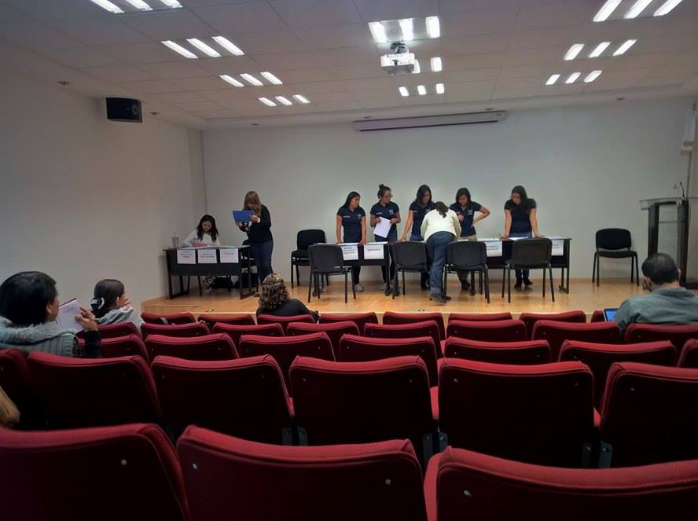

Coordinación
de Básicas
-

- 
-

Bienvenidos
La Coordinación del Área de Básicas se encarga de brindar toda la información sobre las materias que se ofertan en la Facultad de Ingeniería de Tronco Común, con la finalidad de apoyar a los alumnos contribuyendo a un mejor desempeño, este se evalúa mediante la aplicación de exámenes departamentales.
Adicional, se llevan a cabo eventos de interés para los alumnos que ayuden a reforzar sus conocimientos y ampliar su cultura ingenieril.